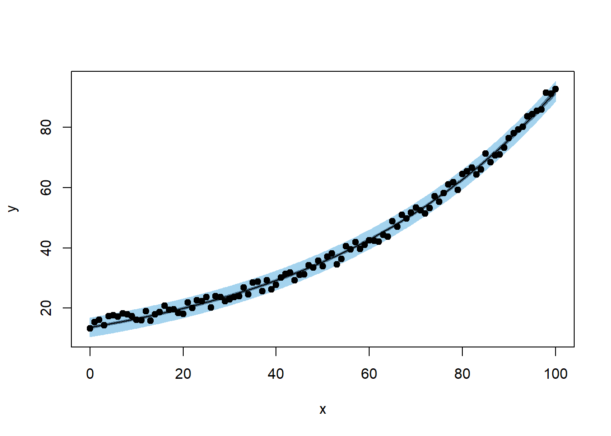
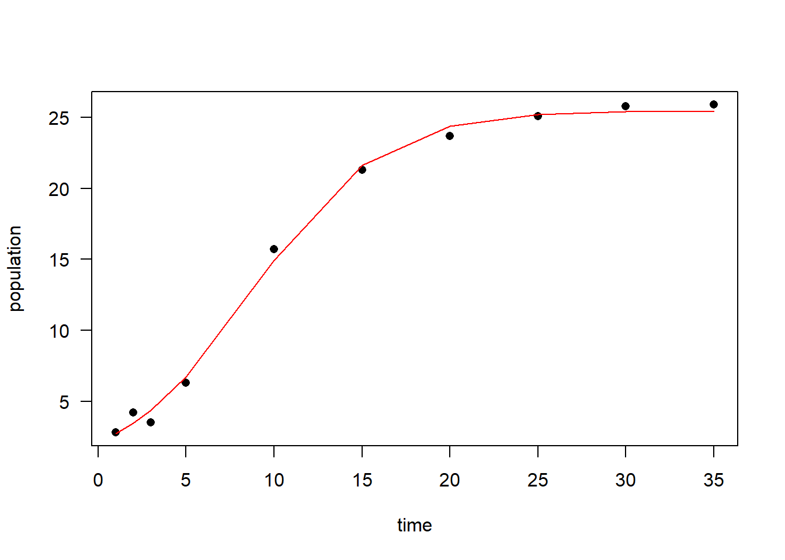
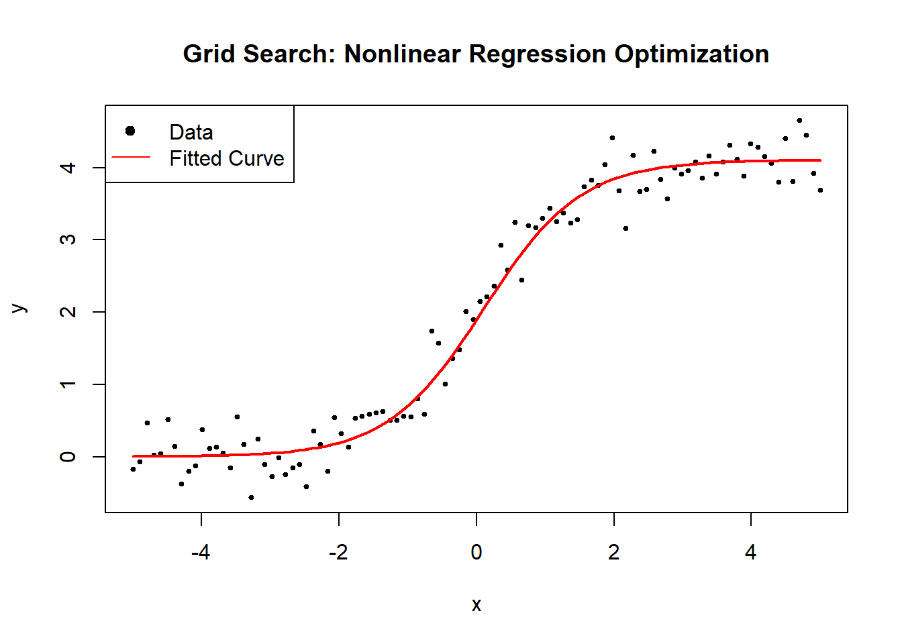
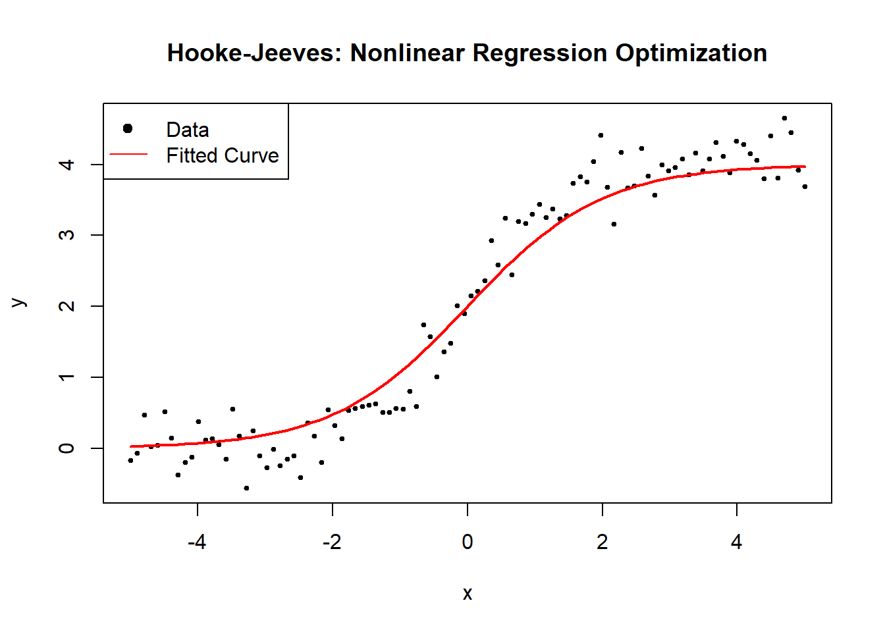
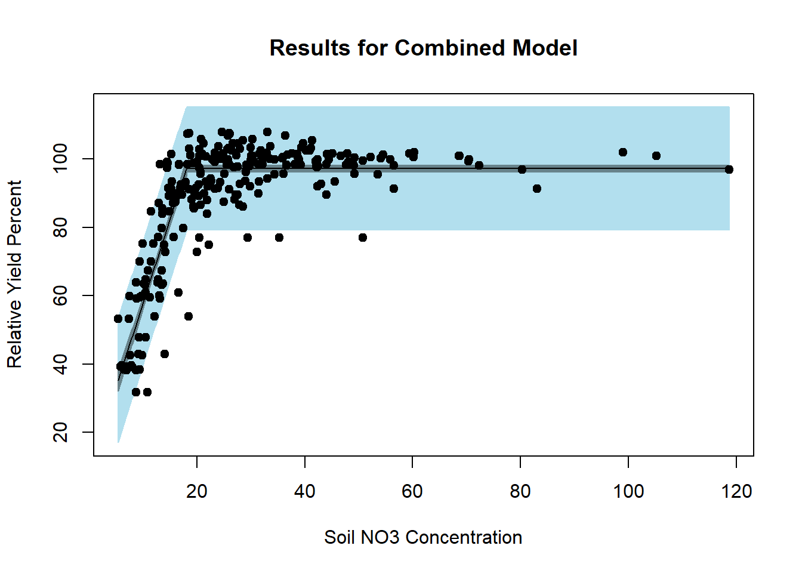
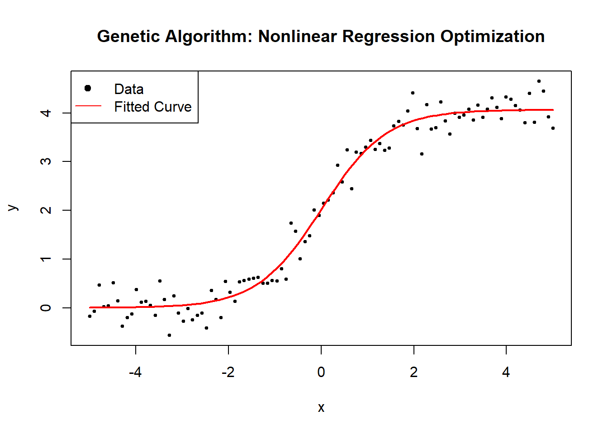

6.2 Non-linear Least Squares
- The LS estimate of \(\theta\), \(\hat{\theta}\) is the set of parameters that minimizes the residual sum of squares:
\[ S(\hat{\theta}) = SSE(\hat{\theta}) = \sum_{i=1}^{n}\{Y_i - f(\mathbf{x_i};\hat{\theta})\}^2 \] - to obtain the solution, we can consider the partial derivatives of \(S(\theta)\) with respect to each \(\theta_j\) and set them to 0, which gives a system of p equations. Each normal equation is \[ \frac{\partial S(\theta)}{\partial \theta_j} = -2\sum_{i=1}^{n}\{Y_i -f(\mathbf{x}_i;\theta)\}[\frac{\partial(\mathbf{x}_i;\theta)}{\partial \theta_j}] = 0 \]
- but we can’t obtain a solution directly/analytically for this equation.
Numerical Solutions
Grid search
- A “grid” of possible parameter values and see which one minimize the residual sum of squares.
- finer grid = greater accuracy
- could be inefficient, and hard when p is large.
Gauss-Newton Algorithm
- we have an initial estimate of \(\theta\) denoted as \(\hat{\theta}^{(0)}\)
- use a Taylor expansions of \(f(\mathbf{x}_i;\theta)\) as a function of \(\theta\) about the point \(\hat{\theta}^{(0)}\)
\[ \begin{aligned} Y_i &= f(x_i;\theta) + \epsilon_i \\ &= f(x_i;\theta) + \sum_{j=1}^{p}\{\frac{\partial f(x_i;\theta)}{\partial \theta_j}\}_{\theta = \hat{\theta}^{(0)}} (\theta_j - \hat{\theta}^{(0)}) + \text{remainder} + \epsilon_i \end{aligned} \]
Equivalently,
In matrix notation,
\[ \mathbf{Y} = \left[ \begin{array} {c} Y_1 \\ . \\ Y_n \end{array} \right] \]
\[ \mathbf{f}(\hat{\theta}^{(0)}) = \left[ \begin{array} {c} f(\mathbf{x_1,\hat{\theta}}^{(0)}) \\ . \\ f(\mathbf{x_n,\hat{\theta}}^{(0)}) \end{array} \right] \]
\[ \mathbf{\epsilon} = \left[ \begin{array} {c} \epsilon_1 \\ . \\ \epsilon_n \end{array} \right] \]
\[ \mathbf{F}(\hat{\theta}^{(0)}) = \left[ \begin{array} {ccc} \frac{\partial f(x_1,\mathbf{\theta})}{\partial \theta_1} & ... & \frac{\partial f(x_1,\mathbf{\theta})}{\partial \theta_p}\\ . & . & . \\ \frac{\partial f(x_n,\mathbf{\theta})}{\partial \theta_1} & ... & \frac{\partial f(x_n,\mathbf{\theta})}{\partial \theta_p} \end{array} \right]_{\theta = \hat{\theta}^{(0)}} \]
Hence,
\[ \mathbf{Y} = \mathbf{f}(\hat{\theta}^{(0)}) + \mathbf{F}(\hat{\theta}^{(0)})(\theta - \hat{\theta}^{(0)}) + \epsilon + \text{remainder} \]
where we assume that the remainder is small and the error term is only assumed to be iid with mean 0 and variance \(\sigma^2\).
We can rewrite the above equation as
\[ \mathbf{Y} - \mathbf{f}(\hat{\theta}^{(0)}) \approx \mathbf{F}(\hat{\theta}^{(0)})(\theta - \hat{\theta}^{(0)}) + \epsilon \]
where it is in the form of linear model. After we solve for \((\theta - \hat{\theta}^{(0)})\) and let it equal to \(\hat{\delta}^{(1)}\)
Then we new estimate is given by adding the Gauss increment adjustment to the initial estimate \(\hat{\theta}^{(1)} = \hat{\theta}^{(0)} + \hat{\delta}^{(1)}\)
We can repeat this process.
Gauss-Newton Algorithm Steps:
- initial estimate \(\hat{\theta}^{(0)}\), set j = 0
- Taylor series expansion and calculate \(\mathbf{f}(\hat{\theta}^{(j)})\) and \(\mathbf{F}(\hat{\theta}^{(j)})\)
- Use OLS to get \(\hat{\delta}^{(j+1)}\)
- get the new estimate \(\hat{\theta}^{(j+1)}\), return to step 2
- continue until “convergence”
- With the final parameter estimate \(\hat{\theta}\), we can estimate \(\sigma^2\) if \(\epsilon \sim (\mathbf{0}, \sigma^2 \mathbf{I})\) by
\[ \hat{\sigma}^2= \frac{1}{n-p}(\mathbf{Y}-\mathbf{f}(x;\hat{\theta}))'(\mathbf{Y}-\mathbf{f}(x;\hat{\theta})) \]
Criteria for convergence
- Minor change in the objective function (SSE = residual sum of squares)
\[ \frac{|SSE(\hat{\theta}^{(j+1)})-SSE(\hat{\theta}^{(j)})|}{SSE(\hat{\theta}^{(j)})} < \gamma_1 \] - Minor change in the parameter estimates
\[ |\hat{\theta}^{(j+1)}-\hat{\theta}^{(j)}| < \gamma_2 \] - “residual projection” criterion of (Bates and Watts 1981)
6.2.1 Alternative of Gauss-Newton Algorithm
6.2.1.1 Gauss-Newton Algorithm
Normal equations:
\[ \frac{\partial SSE(\theta)}{\partial \theta} = 2\mathbf{F}(\theta)'[\mathbf{Y}-\mathbf{f}(\theta)] \]
\[ \begin{aligned} \hat{\theta}^{(j+1)} &= \hat{\theta}^{(j)} + \hat{\delta}^{(j+1)} \\ &= \hat{\theta}^{(j)} + [\mathbf{F}((\hat{\theta})^{(j)})'\mathbf{F}(\hat{\theta}^{(j)})]^{-1}\mathbf{F}(\hat{\theta})^{(j)} \\ &= \hat{\theta}^{(j)} - \frac{1}{2}[\mathbf{F}(\hat{\theta}^{(j)})'\mathbf{F}(\hat{\theta}^{(j)})]^{-1}\frac{\partial SSE(\hat{\theta}^{(j)})}{\partial \theta} \end{aligned} \]
where
- \(\frac{\partial SSE(\hat{\theta}^{(j)})}{\partial \theta}\) is a gradient vector (points in the direction in which the SSE increases most rapidly). This path is known as steepest ascent.
- \([\mathbf{F}(\hat{\theta}^{(j)})'\mathbf{F}(\hat{\theta}^{(j)})]^{-1}\) indicates how far to move
- \(-1/2\): indicator of the direction of steepest descent.
6.2.1.2 Modified Gauss-Newton Algorithm
To avoid overstepping (the local min), we can use the modified Gauss-Newton Algorithm. We define a new proposal for \(\theta\)
\[ \hat{\theta}^{(j+1)} = \hat{\theta}^{(j)} + \alpha_j \hat{\delta}^{(j+1)}, 0 < \alpha_j < 1 \]
where
- \(\alpha_j\) (called the “learning rate”): is used to modify the step length.
We could also have \(\alpha \times 1/2\), but typically it is assumed to be absorbed into the learning rate.
A way to choose \(\alpha_j\), we can use step halving
\[ \hat{\theta}^{(j+1)} = \hat{\theta}^{(j)} + \frac{1}{2^k}\hat{\delta}^{(j+1)} \]
where
- \(k\) is the smallest non-negative integer such that
\[ SSE(\hat{\theta}^{(j)}+\frac{1}{2^k}\hat{\delta}^{(j+1)}) < SSE(\hat{\theta}^{(j)}) \] which means we try \(\hat{\delta}^{(j+1)}\), then \(\hat{\delta}^{(j+1)}/2\), \(\hat{\delta}^{(j+1)}/4\), etc.
The most general form of the convergence algorithm is
\[ \hat{\theta}^{(j+1)} = \hat{\theta}^{(j)} - \alpha_j \mathbf{A}_j \frac{\partial Q(\hat{\theta}^{(j)})}{\partial \theta} \]
where
- \(\mathbf{A}_j\) is a positive definite matrix
- \(\alpha_j\) is the learning rate
- \(\frac{\partial Q(\hat{\theta}^{(j)})}{\partial \theta}\)is the gradient based on some objective function Q (a function of \(\theta\)), which is typically the SSE in nonlinear regression applications (e.g., cross-entropy for classification).
Refer back to the Modified Gauss-Newton Algorithm, we can see it is in this form
\[ \hat{\theta}^{(j+1)} =\hat{\theta}^{(j)} - \alpha_j[\mathbf{F}(\hat{\theta}^{(j)})'\mathbf{F}(\hat{\theta}^{(j)})]^{-1}\frac{\partial SSE(\hat{\theta}^{(j)})}{\partial \theta} \]
where Q = SSE, \([\mathbf{F}(\hat{\theta}^{(j)})'\mathbf{F}(\hat{\theta}^{(j)})]^{-1} = \mathbf{A}\)
6.2.1.3 Steepest Descent
(also known just “gradient descent”)
\[ \hat{\theta}^{(j+1)} = \hat{\theta}^{(j)} - \alpha_j \mathbf{I}_{p \times p}\frac{\partial \mathbf{Q}(\hat{\theta}^{(j)})}{\partial \theta} \]
- slow to converge, moves rapidly initially.
- could be use for starting values
6.2.1.4 Levenberg -Marquardt
\[ \hat{\theta}^{(j+1)} = \hat{\theta}^{(j)} - \alpha_j [\mathbf{F}(\hat{\theta}^{(j)})'\mathbf{F}(\hat{\theta}^{(j)})+ \tau \mathbf{I}_{p \times p}]\frac{\partial \mathbf{Q}(\hat{\theta}^{(j)})}{\partial \theta} \]
which is a compromise between the Gauss-Newton Algorithm and the Steepest Descent.
- best when \(\mathbf{F}(\hat{\theta}^{(j)})'\mathbf{F}(\hat{\theta}^{(j)})\) is nearly singular (\(\mathbf{F}(\hat{\theta}^{(j)})\) isn’t of full rank)
- similar to ridge regression
- If \(SSE(\hat{\theta}^{(j+1)}) < SSE(\hat{\theta}^{(j)})\), then \(\tau= \tau/10\) for the next iteration. Otherwise, \(\tau = 10 \tau\)
6.2.1.5 Newton-Raphson
\[ \hat{\theta}^{(j+1)} = \hat{\theta}^{(j)} - \alpha_j [\frac{\partial^2Q(\hat{\theta}^{(j)})}{\partial \theta \partial \theta'}]^{-1}\frac{\partial \mathbf{Q}(\hat{\theta}^{(j)})}{\partial \theta} \]
The Hessian matrix can be rewritten as:
\[ \frac{ \partial^2Q(\hat{ \theta}^{(j)})}{ \partial \theta \partial \theta'} = 2 \mathbf{F}((\hat{ \theta})^{(j)})' \mathbf{F} ( \hat{\theta}^{(j)}) - 2\sum_{i=1}^{n} [Y_i - f(x_i;\theta)] \frac{\partial^2f(x_i;\theta)}{\partial \theta \partial \theta'} \]
which contains the same term that Gauss-Newton Algorithm, combined with one containing the second partial derivatives of f(). (methods that require the second derivatives of the objective function are known as “second-order methods”.)
However, the last term \(\frac{\partial^2f(x_i;\theta)}{\partial \theta \partial \theta'}\) can sometimes be non-singular.
6.2.1.6 Quasi-Newton
update \(\theta\) according to
\[ \hat{\theta}^{(j+1)} = \hat{\theta}^{(j)} - \alpha_j \mathbf{H}_j^{-1}\frac{\partial \mathbf{Q}(\hat{\theta}^{(j)})}{\partial \theta} \]
where \(H_j\) is a symmetric positive definite approximation to the Hessian, which gets closer as \(j \to \infty\).
- \(\mathbf{H}_j\) is computed iteratively
- Among first-order methods (where only first derivatives are required), this method performs best.
6.2.1.7 Derivative Free Methods
- secant Method: like Gauss-Newton Algorithm, but calculates the derivatives numerically from past iterations.
- Simplex Methods
- Genetic Algorithm
- Differential Evolution Algorithms
- Particle Swarm Optimization
- Ant Colony Optimization
6.2.2 Practical Considerations
To converge, algorithm need good initial estimates.
Starting values:
- Prior or theoretical info
- A grid search or a graph of \(SSE(\theta)\)
- could also use OLS to get starting values.
- Model interpretation: if you have some idea regarding the form of the objective function, then you can try to guess the initial value.
- Expected Value Parameterization
Constrained Parameters: (constraints on parameters like \(\theta_i>a,a< \theta_i <b\))
- fit the model first to see if the converged parameter estimates satisfy the constraints.
- if they don’t satisfy, then try re-parameterizing
6.2.2.1 Failure to converge
- \(SSE(\theta)\) may be “flat” in a neighborhood of the minimum.
- You can try different or “better” starting values.
- Might suggest the model is too complex for the data, might consider simpler model.
6.2.2.2 Convergence to a Local Minimum
- Linear least squares has the property that \(SSE(\theta) = \mathbf{(Y-X\beta)'(Y-X\beta)}\), which is quadratic and has a unique minimum (or maximum).
- Nonlinear east squares need not have a unique minimum
- Using different starting values can help
- If the dimension of \(\theta\) is low, graph \(SSE(\theta)\) as a function of \(\theta_i\)
- Different algorithm can help (e.g., genetic algorithm, particle swarm)
To converge, algorithms need good initial estimates.
Starting values:
- prior or theoretical info
- A grid search or a graph
- OLS estimates as starting values
- Model interpretation
- Expected Value Parameterization
Constrained Parameters:
- try the model without the constraints first.
- If the resulted parameter estimates does not satisfy the constraint, try re-parameterizing
# Grid search
# choose grid of a and b values
aseq = seq(10,18,.2)
bseq = seq(.001,.075,.001)
na = length(aseq)
nb = length(bseq)
SSout = matrix(0,na*nb,3) #matrix to save output
cnt = 0
for (k in 1:na){
for (j in 1:nb){
cnt = cnt+1
ypred = mod(aseq[k],bseq[j],x) #evaluate model w/ these parms
ss = sum((y-ypred)^2) #this is our SSE objective function
#save values of a, b, and SSE
SSout[cnt,1]=aseq[k]
SSout[cnt,2]=bseq[j]
SSout[cnt,3]=ss
}
}
#find minimum SSE and associated a,b values
mn_indx = which.min(SSout[,3])
astrt = SSout[mn_indx,1]
bstrt = SSout[mn_indx,2]
#now, run nls function with these starting values
nlin_modG=nls(y~mod(a,b,x),start=list(a=astrt,b=bstrt))
nlin_modG
#> Nonlinear regression model
#> model: y ~ mod(a, b, x)
#> data: parent.frame()
#> a b
#> 13.60391 0.01911
#> residual sum-of-squares: 235.5
#>
#> Number of iterations to convergence: 3
#> Achieved convergence tolerance: 2.293e-07
# Note, the package `nls_multstart` will allow you
# to do a grid search without programming your own loopFor prediction interval
plotFit(
nlin_modG,
interval = "both",
pch = 19,
shade = TRUE,
col.conf = "skyblue4",
col.pred = "lightskyblue2",
data = datf
) 
Based on the forms of your function, you can also have programmed starting values from nls function (e.e.g, logistic growth, asymptotic regression, etc).
apropos("^SS")
#> [1] "ss" "SSasymp" "SSasympOff" "SSasympOrig" "SSbiexp"
#> [6] "SSD" "SSfol" "SSfpl" "SSgompertz" "SSlogis"
#> [11] "SSmicmen" "SSout" "SSweibull"For example, a logistic growth model:
\[ P = \frac{K}{1+ exp(P_0+ rt)} + \epsilon \]
where
- P = population at time t
- K = carrying capacity
- r = population growth rate
but in R you have slight different parameterization:
\[ P = \frac{asym}{1 + exp(\frac{xmid - t}{scal})} \]
where
- \(asym\) = carrying capacity
- \(xmid\) = the x value at the inflection point of the curve
- \(scal\) = scaling parameter.
Hence, you have
- \(K = asym\)
- \(r = -1/scal\)
- \(P_0 = -rxmid\)
# simulated data
time <- c(1, 2, 3, 5, 10, 15, 20, 25, 30, 35)
population <-
c(2.8, 4.2, 3.5, 6.3, 15.7, 21.3, 23.7, 25.1, 25.8, 25.9)
plot(time, population, las = 1, pch = 16)
# model fitting
logisticModelSS <- nls(population ~ SSlogis(time, Asym, xmid, scal))
summary(logisticModelSS)
#>
#> Formula: population ~ SSlogis(time, Asym, xmid, scal)
#>
#> Parameters:
#> Estimate Std. Error t value Pr(>|t|)
#> Asym 25.5029 0.3666 69.56 3.34e-11 ***
#> xmid 8.7347 0.3007 29.05 1.48e-08 ***
#> scal 3.6353 0.2186 16.63 6.96e-07 ***
#> ---
#> Signif. codes: 0 '***' 0.001 '**' 0.01 '*' 0.05 '.' 0.1 ' ' 1
#>
#> Residual standard error: 0.6528 on 7 degrees of freedom
#>
#> Number of iterations to convergence: 1
#> Achieved convergence tolerance: 1.908e-06
coef(logisticModelSS)
#> Asym xmid scal
#> 25.502890 8.734698 3.635333Other parameterization
#convert to other parameterization
Ks = as.numeric(coef(logisticModelSS)[1])
rs = -1 / as.numeric(coef(logisticModelSS)[3])
Pos = -rs * as.numeric(coef(logisticModelSS)[2])
#let's refit with these parameters
logisticModel <-
nls(population ~ K / (1 + exp(Po + r * time)),
start = list(Po = Pos, r = rs, K = Ks))
summary(logisticModel)
#>
#> Formula: population ~ K/(1 + exp(Po + r * time))
#>
#> Parameters:
#> Estimate Std. Error t value Pr(>|t|)
#> Po 2.40272 0.12702 18.92 2.87e-07 ***
#> r -0.27508 0.01654 -16.63 6.96e-07 ***
#> K 25.50289 0.36665 69.56 3.34e-11 ***
#> ---
#> Signif. codes: 0 '***' 0.001 '**' 0.01 '*' 0.05 '.' 0.1 ' ' 1
#>
#> Residual standard error: 0.6528 on 7 degrees of freedom
#>
#> Number of iterations to convergence: 0
#> Achieved convergence tolerance: 1.924e-06#note: initial values = solution (highly unusual, but ok)
plot(time, population, las = 1, pch = 16)
lines(time, predict(logisticModel), col = "red")
If can also define your own self-starting function if your models are uncommon (built in nls)
Example is based on (Schabenberger and Pierce 2001)
#Load data
dat <- read.table("images/dat.txt", header = T)
# plot
dat.plot <-
ggplot(dat) + geom_point(aes(
x = no3,
y = ryp,
color = as.factor(depth)
)) +
labs(color = 'Depth (cm)') + xlab('Soil NO3') +
ylab('relative yield percent')
dat.plot
The suggested model (known as plateau model) is
\[ E(Y_{ij}) = (\beta_{0j} + \beta_{1j}N_{ij})I_{N_{ij}\le \alpha_j} + (\beta_{0j} + \beta_{1j}\alpha_j)I_{N_{ij} > \alpha_j} \]
where
- N is an observation
- i is a particular observation
- j = 1,2 corresponding to depths (30,60)
#First define model as a function
nonlinModel <- function(predictor, b0, b1, alpha) {
ifelse(predictor <= alpha,
#if observation less than cutoff simple linear model
b0 + b1 * predictor,
b0 + b1 * alpha) #otherwise flat line
}define selfStart function. Because we defined our model to be linear in the first part and then plateau (remain constant) we can use the first half of our predictors (sorted by increasing value) to get an initial estimate for the slope and intercept of the model, and the last predictor value (alpha) can be the starting value for the plateau parameter.
nonlinModelInit <- function(mCall, LHS, data) {
# sort data by increasing predictor value -
# done so we can just use the low level
# no3 conc to fit a simple model
xy <- sortedXyData(mCall[['predictor']], LHS, data)
n <- nrow(xy)
#For the first half of the data a simple linear model is fit
lmFit <- lm(xy[1:(n / 2), 'y'] ~ xy[1:(n / 2), 'x'])
b0 <- coef(lmFit)[1]
b1 <- coef(lmFit)[2]
# for the cut off to the flat part select the last
# x value used in creating linear model
alpha <- xy[(n / 2), 'x']
value <- c(b0, b1, alpha)
names(value) <- mCall[c('b0', 'b1', 'alpha')]
value
}combine model and custom function to calculate starting values.
# Above code defined model and selfStart now just need to call it for each of the depths
sep30_nls <-
nls(ryp ~ SS_nonlinModel(predictor = no3, b0, b1, alpha),
data = dat[dat$depth == 30,])
sep60_nls <-
nls(ryp ~ SS_nonlinModel(predictor = no3, b0, b1, alpha),
data = dat[dat$depth == 60,])
par(mfrow = c(1, 2))
plotFit(
sep30_nls,
interval = "both",
pch = 19,
shade = TRUE,
col.conf = "skyblue4",
col.pred = "lightskyblue2",
data = dat[dat$depth == 30,],
main = 'Results 30 cm depth',
ylab = 'relative yield percent',
xlab = 'Soil NO3 concentration',
xlim = c(0, 120)
)
plotFit(
sep60_nls,
interval = "both",
pch = 19,
shade = TRUE,
col.conf = "lightpink4",
col.pred = "lightpink2",
data = dat[dat$depth == 60,],
main = 'Results 60 cm depth',
ylab = 'relative yield percent',
xlab = 'Soil NO3 concentration',
xlim = c(0, 120)
)
summary(sep30_nls)
#>
#> Formula: ryp ~ SS_nonlinModel(predictor = no3, b0, b1, alpha)
#>
#> Parameters:
#> Estimate Std. Error t value Pr(>|t|)
#> b0 15.1943 2.9781 5.102 6.89e-07 ***
#> b1 3.5760 0.1853 19.297 < 2e-16 ***
#> alpha 23.1324 0.5098 45.373 < 2e-16 ***
#> ---
#> Signif. codes: 0 '***' 0.001 '**' 0.01 '*' 0.05 '.' 0.1 ' ' 1
#>
#> Residual standard error: 8.258 on 237 degrees of freedom
#>
#> Number of iterations to convergence: 6
#> Achieved convergence tolerance: 3.608e-09
summary(sep60_nls)
#>
#> Formula: ryp ~ SS_nonlinModel(predictor = no3, b0, b1, alpha)
#>
#> Parameters:
#> Estimate Std. Error t value Pr(>|t|)
#> b0 5.4519 2.9785 1.83 0.0684 .
#> b1 5.6820 0.2529 22.46 <2e-16 ***
#> alpha 16.2863 0.2818 57.80 <2e-16 ***
#> ---
#> Signif. codes: 0 '***' 0.001 '**' 0.01 '*' 0.05 '.' 0.1 ' ' 1
#>
#> Residual standard error: 7.427 on 237 degrees of freedom
#>
#> Number of iterations to convergence: 5
#> Achieved convergence tolerance: 8.571e-09Instead of modeling the depths model separately we model them together - so there is a common slope, intercept, and plateau.
red_nls <-
nls(ryp ~ SS_nonlinModel(predictor = no3, b0, b1, alpha),
data = dat)
summary(red_nls)
#>
#> Formula: ryp ~ SS_nonlinModel(predictor = no3, b0, b1, alpha)
#>
#> Parameters:
#> Estimate Std. Error t value Pr(>|t|)
#> b0 8.7901 2.7688 3.175 0.0016 **
#> b1 4.8995 0.2207 22.203 <2e-16 ***
#> alpha 18.0333 0.3242 55.630 <2e-16 ***
#> ---
#> Signif. codes: 0 '***' 0.001 '**' 0.01 '*' 0.05 '.' 0.1 ' ' 1
#>
#> Residual standard error: 9.13 on 477 degrees of freedom
#>
#> Number of iterations to convergence: 7
#> Achieved convergence tolerance: 7.126e-09
par(mfrow = c(1, 1))
plotFit(
red_nls,
interval = "both",
pch = 19,
shade = TRUE,
col.conf = "lightblue4",
col.pred = "lightblue2",
data = dat,
main = 'Results combined',
ylab = 'relative yield percent',
xlab = 'Soil NO3 concentration'
)
Examine residual values for the combined model.
library(nlstools)
# using nlstools nlsResiduals function to get some quick residual plots
# can also use test.nlsResiduals(resid)
# https://www.rdocumentation.org/packages/nlstools/versions/1.0-2
resid <- nlsResiduals(red_nls)
plot(resid)
can we test whether the parameters for the two soil depth fits are significantly different? To know if the combined model is appropriate, we consider a parameterization where we let the parameters for the 60cm model be equal to the parameters from the 30cm model plus some increment:
\[ \begin{aligned} \beta_{02} &= \beta_{01} + d_0 \\ \beta_{12} &= \beta_{11} + d_1 \\ \alpha_{2} &= \alpha_{1} + d_a \end{aligned} \]
We can implement this in the following function:
nonlinModelF <- function(predictor,soildep,b01,b11,a1,d0,d1,da){
b02 = b01 + d0 #make 60cm parms = 30cm parms + increment
b12 = b11 + d1
a2 = a1 + da
y1 = ifelse(predictor<=a1,
#if observation less than cutoff simple linear model
b01+b11*predictor,
b01+b11*a1) # otherwise flat line
y2 = ifelse(predictor<=a2,
b02+b12*predictor,
b02+b12*a2)
y = y1*(soildep == 30) + y2*(soildep == 60) #combine models
return(y)
}Starting values are easy now because we fit each model individually.
Soil_full = nls(
ryp ~ nonlinModelF(
predictor = no3,
soildep = depth,
b01,
b11,
a1,
d0,
d1,
da
),
data = dat,
start = list(
b01 = 15.2,
b11 = 3.58,
a1 = 23.13,
d0 = -9.74,
d1 = 2.11,
da = -6.85
)
)
summary(Soil_full)
#>
#> Formula: ryp ~ nonlinModelF(predictor = no3, soildep = depth, b01, b11,
#> a1, d0, d1, da)
#>
#> Parameters:
#> Estimate Std. Error t value Pr(>|t|)
#> b01 15.1943 2.8322 5.365 1.27e-07 ***
#> b11 3.5760 0.1762 20.291 < 2e-16 ***
#> a1 23.1324 0.4848 47.711 < 2e-16 ***
#> d0 -9.7424 4.2357 -2.300 0.0219 *
#> d1 2.1060 0.3203 6.575 1.29e-10 ***
#> da -6.8461 0.5691 -12.030 < 2e-16 ***
#> ---
#> Signif. codes: 0 '***' 0.001 '**' 0.01 '*' 0.05 '.' 0.1 ' ' 1
#>
#> Residual standard error: 7.854 on 474 degrees of freedom
#>
#> Number of iterations to convergence: 1
#> Achieved convergence tolerance: 3.742e-06So, the increment parameters, \(d_1\),\(d_2\),\(d_a\) are all significantly different from 0, suggesting that we should have two models here.
6.2.3 Model/Estimation Adequacy
(Bates and Watts 1980) assess nonlinearity in terms of 2 components of curvature:
Intrinsic nonlinearity: the degree of bending and twisting in \(f(\theta)\); our estimation approach assumes that the true function is relatively flat (planar) in the neighborhood fo \(\hat{\theta}\), which would not be true if \(f()\) has a lot of “bending” in the neighborhood of \(\hat{\theta}\) (independent of parameterization)
If bad, the distribution of residuals will be seriously distorted
slow to converge
difficult to identify ( could use this function
rms.curve)Solution:
- could use higher order Taylor expansions estimation
- Bayesian method
Parameter effects nonlinearity: degree to which curvature (nonlinearity) is affected by choice of \(\theta\) (data dependent; dependent on parameterization)
- leads to problems with inference on \(\hat{\theta}\)
rms.curveinMASScan identify- bootstrap-based inference can also be used
- Solution: try to reparaemterize.
#check parameter effects and intrinsic curvature
modD = deriv3(~ a*exp(b*x), c("a","b"),function(a,b,x) NULL)
nlin_modD = nls(y ~ modD(a, b, x),
start = list(a = astrt, b = bstrt),
data = datf)
rms.curv(nlin_modD)
#> Parameter effects: c^theta x sqrt(F) = 0.0626
#> Intrinsic: c^iota x sqrt(F) = 0.0062In linear model, we have Linear Regression, we have goodness of fit measure as \(R^2\):
\[ \begin{aligned} R^2 &= \frac{SSR}{SSTO} = 1- \frac{SSE}{SSTO} \\ &= \frac{\sum_{i=1}^n (\hat{Y}_i- \bar{Y})^2}{\sum_{i=1}^n (Y_i- \bar{Y})^2} = 1- \frac{\sum_{i=1}^n ({Y}_i- \hat{Y})^2}{\sum_{i=1}^n (Y_i- \bar{Y})^2} \end{aligned} \]
but not valid in the nonlinear case because the error sum of squares and model sum of squares do not add to the total corrected sum of squares
\[ SSR + SSE \neq SST \]
but we can use pseudo-\(R^2\):
\[ R^2_{pseudo} = 1 - \frac{\sum_{i=1}^n ({Y}_i- \hat{Y})^2}{\sum_{i=1}^n (Y_i- \bar{Y})^2} \]
But we can’t interpret this as the proportion of variability explained by the model. We should use as a relative comparison of different models.
Residual Plots: standardize, similar to OLS. useful when the intrinsic curvature is small:
The studentized residuals
\[ r_i = \frac{e_i}{s\sqrt{1-\hat{c}_i}} \]
where \(\hat{c}_i\)is the i-th diagonal of \(\mathbf{\hat{H}= F(\hat{\theta})[F(\hat{\theta})'F(\hat{\theta})]^{-1}F(\hat{\theta})'}\)
We could have problems of
Collinearity: the condition number of \(\mathbf{[F(\hat{\theta})'F(\hat{\theta})]^{-1}}\) should be less than 30. Follow (Magel and Hertsgaard 1987); reparameterize if possible
Leverage: Like OLS, but consider \(\mathbf{\hat{H}= F(\hat{\theta})[F(\hat{\theta})'F(\hat{\theta})]^{-1}F(\hat{\theta})'}\) (also known as “tangent plant hat matrix”) (St Laurent and Cook 1992)
Heterogeneous Errors: weighted Non-linear Least Squares
Correlated Errors:
- Generalized Nonlinear Least Squares
- Nonlinear Mixed Models
- Bayesian methods
6.2.4 Application
\[ y_i = \frac{\theta_0 + \theta_1 x_i}{1 + \theta_2 \exp(0.4 x_i)} + \epsilon_i \]
where \(i = 1,..,n\)
Get the starting values

We notice that \(Y_{max} = \theta_0 + \theta_1 x_i\) in which we can find x_i from data
hence, \(x = 0.0094\) when \(y = 2.6722\) when we have the first equation as
\[ 2.6722 = \theta_0 + 0.0094 \theta_1 \]
\[ \theta_0 + 0.0094 \theta_1 + 0 \theta_2 = 2.6722 \]
Secondly, we notice that we can obtain the “average” of y when
\[ 1+ \theta_2 exp(0.4 x) = 2 \]
then we can find this average numbers of x and y
# find mean y
mean(my_data$y)
#> [1] -0.0747864
# find y closest to its mean
my_data$y[which.min(abs(my_data$y - (mean(my_data$y))))]
#> [1] -0.0773
# find x closest to the mean y
my_data$x[which.min(abs(my_data$y - (mean(my_data$y))))]
#> [1] 11.0648we have the second equation
\[ 1 + \theta_2 exp(0.4*11.0648) = 2 \]
\[ 0 \theta_1 + 0 \theta_1 + 83.58967 \theta_2 = 1 \]
Thirdly, we can plug in the value of x closest to 1 to find the value of y
# find value of x closet to 1
my_data$x[which.min(abs(my_data$x - 1))]
#> [1] 0.9895
# find index of x closest to 1
match(my_data$x[which.min(abs(my_data$x - 1))], my_data$x)
#> [1] 14
# find y value
my_data$y[match(my_data$x[which.min(abs(my_data$x - 1))], my_data$x)]
#> [1] 1.4577hence we have
\[ 1.457 = \frac{\theta_0 + \theta_1*0.9895}{1 + \theta_2 exp(0.4*0.9895)} \]
\[ 1.457 + 2.164479 *\theta_2 = \theta_0 + \theta_1*0.9895 \]
\[ \theta_0 + \theta_1*0.9895 - 2.164479 *\theta_2 = 1.457 \]
with 3 equations, we can solve them to get the starting value for \(\theta_0,\theta_1, \theta_2\)
\[ \theta_0 + 0.0094 \theta_1 + 0 \theta_2 = 2.6722 \]
\[ 0 \theta_1 + 0 \theta_1 + 83.58967 \theta_2 = 1 \]
\[ \theta_0 + \theta_1*0.9895 - 2.164479 *\theta_2 = 1.457 \]
library(matlib)
A = matrix(
c(0, 0.0094, 0, 0, 0, 83.58967, 1, 0.9895,-2.164479),
nrow = 3,
ncol = 3,
byrow = T
)
b = c(2.6722, 1, 1.457)
showEqn(A, b)
#> 0*x1 + 0.0094*x2 + 0*x3 = 2.6722
#> 0*x1 + 0*x2 + 83.58967*x3 = 1
#> 1*x1 + 0.9895*x2 - 2.164479*x3 = 1.457
Solve(A, b, fractions = F)
#> x1 = -279.80879739
#> x2 = 284.27659574
#> x3 = 0.0119632Construct manually Gauss-Newton Algorithm
#starting value
theta_0_strt = -279.80879739
theta_1_strt = 284.27659574
theta_2_strt = 0.0119632
#model
mod_4 = function(theta_0, theta_1, theta_2, x) {
(theta_0 + theta_1 * x) / (1 + theta_2 * exp(0.4 * x))
}
#define a function
f_4 = expression((theta_0 + theta_1 * x) / (1 + theta_2 * exp(0.4 * x)))
#take the first derivative
df_4.d_theta_0 = D(f_4, 'theta_0')
df_4.d_theta_1 = D(f_4, 'theta_1')
df_4.d_theta_2 = D(f_4, 'theta_2')
# save the result of all iterations
theta_vec = matrix(c(theta_0_strt, theta_1_strt, theta_2_strt))
delta = matrix(NA, nrow = 3, ncol = 1)
f_theta = as.matrix(eval(
f_4,
list(
x = my_data$x,
theta_0 = theta_vec[1, 1],
theta_1 = theta_vec[2, 1],
theta_2 = theta_vec[3, 1]
)
))
i = 1
repeat {
F_theta_0 = as.matrix(cbind(
eval(
df_4.d_theta_0,
list(
x = my_data$x,
theta_0 = theta_vec[1, i],
theta_1 = theta_vec[2, i],
theta_2 = theta_vec[3, i]
)
),
eval(
df_4.d_theta_1,
list(
x = my_data$x,
theta_0 = theta_vec[1, i],
theta_1 = theta_vec[2, i],
theta_2 = theta_vec[3, i]
)
),
eval(
df_4.d_theta_2,
list(
x = my_data$x,
theta_0 = theta_vec[1, i],
theta_1 = theta_vec[2, i],
theta_2 = theta_vec[3, i]
)
)
))
delta[, i] = (solve(t(F_theta_0) %*% F_theta_0)) %*% t(F_theta_0) %*% (my_data$y - f_theta[, i])
theta_vec = cbind(theta_vec, matrix(NA, nrow = 3, ncol = 1))
theta_vec[, i + 1] = theta_vec[, i] + delta[, i]
i = i + 1
f_theta = cbind(f_theta, as.matrix(eval(
f_4,
list(
x = my_data$x,
theta_0 = theta_vec[1, i],
theta_1 = theta_vec[2, i],
theta_2 = theta_vec[3, i]
)
)))
delta = cbind(delta, matrix(NA, nrow = 3, ncol = 1))
#convergence criteria based on SSE
if (abs(sum((my_data$y - f_theta[, i]) ^ 2) - sum((my_data$y - f_theta[, i - 1]) ^ 2)) / (sum((my_data$y - f_theta[, i - 1]) ^ 2)) < 0.001) {
break
}
}
delta
#> [,1] [,2] [,3] [,4] [,5] [,6]
#> [1,] 2.811840e+02 -0.03929013 0.43160654 0.6904856 0.6746748 0.4056460
#> [2,] -2.846545e+02 0.03198446 -0.16403964 -0.2895487 -0.2933345 -0.1734087
#> [3,] -1.804567e-05 0.01530258 0.05137285 0.1183271 0.1613129 0.1160404
#> [,7] [,8]
#> [1,] 0.09517681 NA
#> [2,] -0.03928239 NA
#> [3,] 0.03004911 NA
theta_vec
#> [,1] [,2] [,3] [,4] [,5] [,6]
#> [1,] -279.8087974 1.37521388 1.33592375 1.76753029 2.4580158 3.1326907
#> [2,] 284.2765957 -0.37788712 -0.34590266 -0.50994230 -0.7994910 -1.0928255
#> [3,] 0.0119632 0.01194515 0.02724773 0.07862059 0.1969477 0.3582607
#> [,7] [,8]
#> [1,] 3.5383367 3.6335135
#> [2,] -1.2662342 -1.3055166
#> [3,] 0.4743011 0.5043502
head(f_theta)
#> [,1] [,2] [,3] [,4] [,5] [,6] [,7] [,8]
#> [1,] -273.8482 1.355410 1.297194 1.633802 2.046023 2.296554 2.389041 2.404144
#> [2,] -209.0859 1.268192 1.216738 1.514575 1.863098 2.059505 2.126009 2.135969
#> [3,] -190.3323 1.242916 1.193433 1.480136 1.810629 1.992095 2.051603 2.060202
#> [4,] -177.1891 1.225196 1.177099 1.456024 1.774000 1.945197 1.999945 2.007625
#> [5,] -148.5872 1.186618 1.141549 1.403631 1.694715 1.844154 1.888953 1.894730
#> [6,] -119.9585 1.147980 1.105961 1.351301 1.615968 1.744450 1.779859 1.783866
# estimate sigma^2
sigma2 = 1 / (nrow(my_data) - 3) * (t(my_data$y - (f_theta[, ncol(f_theta)]))) %*%
(my_data$y - (f_theta[, ncol(f_theta)])) # p = 3
sigma2
#> [,1]
#> [1,] 0.0801686After 8 iterations, my function has converged. And objective function value at convergence is
and the parameters of \(\theta\)s are
and the asymptotic variance covariance matrix is
as.numeric(sigma2)*as.matrix(solve(crossprod(F_theta_0)))
#> [,1] [,2] [,3]
#> [1,] 0.11552571 -0.04817428 0.02685848
#> [2,] -0.04817428 0.02100861 -0.01158212
#> [3,] 0.02685848 -0.01158212 0.00703916Issue that I encounter in this problem was that it was very sensitive to starting values. when I tried the value of 1 for all \(\theta\)s, I have vastly different parameter estimates. Then, I try to use the model interpretation to try to find reasonable starting values.
Check with predefined function in nls
nlin_4 = nls(
y ~ mod_4(theta_0, theta_1, theta_2, x),
start = list(
theta_0 = -279.80879739 ,
theta_1 = 284.27659574 ,
theta_2 = 0.0119632
),
data = my_data
)
nlin_4
#> Nonlinear regression model
#> model: y ~ mod_4(theta_0, theta_1, theta_2, x)
#> data: my_data
#> theta_0 theta_1 theta_2
#> 3.6359 -1.3064 0.5053
#> residual sum-of-squares: 19.8
#>
#> Number of iterations to convergence: 9
#> Achieved convergence tolerance: 2.294e-07